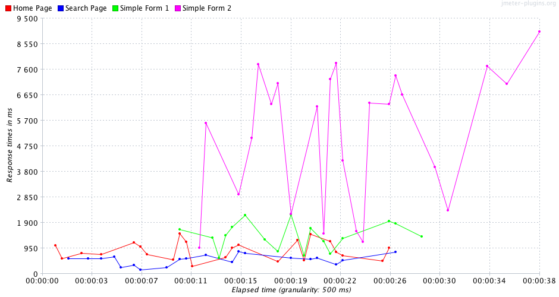
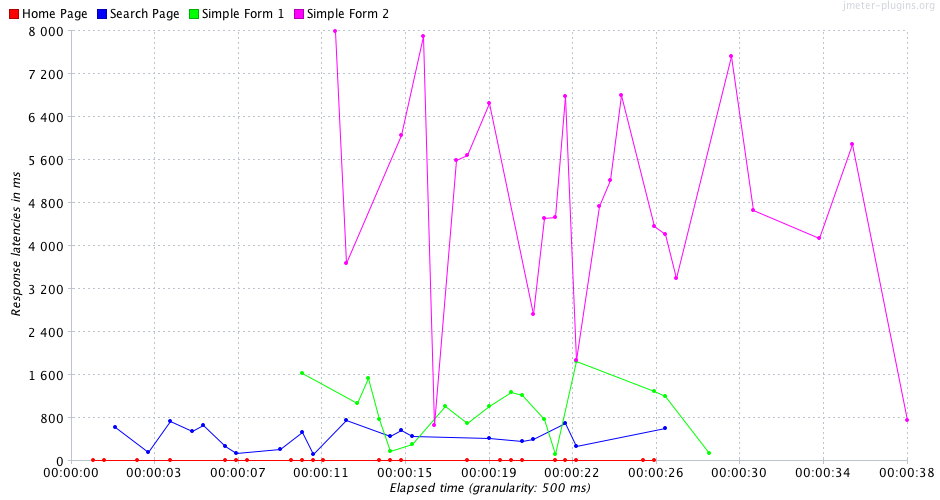
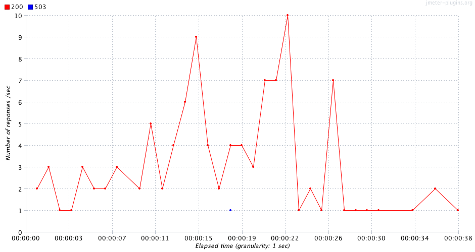
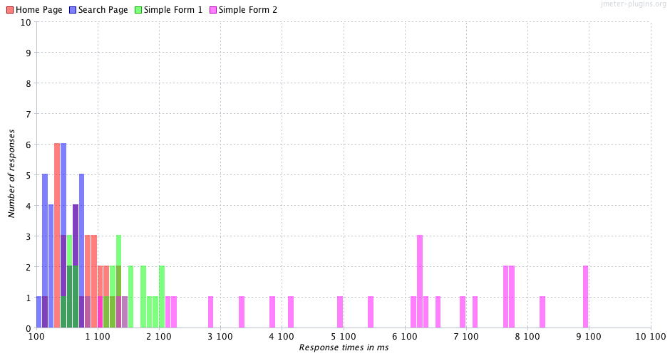
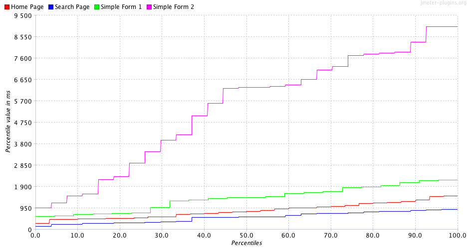

Sample Example – sample nominal
- Executed at 05/03/13, às 21:05
- JMeter log:
sample_nominal_20130305_200529.jtl
Summary
Result Table:
| Page | Requests | AVG | Median | Std Deviation | % Deviation | Minimum | 90% | Maximum | Throughput | % error | under 0.2 | under 0.25 | under 0.3 | under 0.4 | under 0.5 |
|---|---|---|---|---|---|---|---|---|---|---|---|---|---|---|---|
| Home Page | 30 | 836 | 783 | 326.27 | 22.0 | 279 | 1255 | 1483 | 1.13 | 0.0 | 0.0000 | 0.0000 | 0.0000 | 0.0000 | 0.0000 |
| Search Page | 27 | 542 | 563 | 224.87 | 25.24 | 152 | 809 | 891 | 1.04 | 0.0 | 0.0000 | 0.0000 | 0.0000 | 0.0000 | 0.0000 |
| Simple Form 2 | 27 | 5377 | 6311 | 2507.42 | 27.84 | 967 | 7867 | 9006 | 0.87 | 0.0 | 0.0000 | 0.0000 | 0.0000 | 0.0000 | 0.0000 |
| Simple Form 1 | 22 | 1380 | 1416 | 521.8 | 23.82 | 592 | 2081 | 2191 | 1.1 | 4.55 | 0.0000 | 0.0000 | 0.0000 | 0.0000 | 0.0000 |
| TOTAL | 106 | 2031 | 967 | 2368.62 | 26.3 | 152 | 6361 | 9006 | 2.77 | 0.94 | 0.0000 | 0.0000 | 0.0000 | 0.0000 | 0.0000 |
Thread Distribution (Thread State Over Time)

Response Time

Latency Time

Response types

Response time distribution

Response time percentils

Issues:
| Issue | Label | Item | Expected | Real |
|---|---|---|---|---|
| 1 | Home Page | Number of samplers | 50 | 30 |
| 2 | Home Page | Min Throughtput | 1.3 | 1.13 |
| 3 | Home Page | under 0.2 | 30 | 0 |
| 4 | Home Page | under 0.25 | 90 | 0 |
| 5 | Home Page | under 0.3 | 95 | 0 |
| 6 | Home Page | under 0.4 | 97 | 0 |
| 7 | Home Page | under 0.5 | 99 | 0 |
| 8 | Search Page | Number of samplers | 50 | 27 |
| 9 | Search Page | % Deviation | 25 | 25.24 |
| 10 | Search Page | Min Throughtput | 1.3 | 1.04 |
| 11 | Search Page | under 0.2 | 30 | 0 |
| 12 | Search Page | under 0.25 | 90 | 0 |
| 13 | Search Page | under 0.3 | 95 | 0 |
| 14 | Search Page | under 0.4 | 97 | 0 |
| 15 | Search Page | under 0.5 | 99 | 0 |
| 16 | Simple Form 2 | Number of samplers | 50 | 27 |
| 17 | Simple Form 2 | Average | 1000 | 5377 |
| 18 | Simple Form 2 | Median | 1000 | 6311 |
| 19 | Simple Form 2 | Std. Deviation | 1000 | 2507.42 |
| 20 | Simple Form 2 | % Deviation | 25 | 27.84 |
| 21 | Simple Form 2 | Min Time | 400 | 967 |
| 22 | Simple Form 2 | 90% Line | 2000 | 7867 |
| 23 | Simple Form 2 | Max Time | 2100 | 9006 |
| 24 | Simple Form 2 | Min Throughtput | 1.3 | 0.87 |
| 25 | Simple Form 2 | under 0.2 | 30 | 0 |
| 26 | Simple Form 2 | under 0.25 | 90 | 0 |
| 27 | Simple Form 2 | under 0.3 | 95 | 0 |
| 28 | Simple Form 2 | under 0.4 | 97 | 0 |
| 29 | Simple Form 2 | under 0.5 | 99 | 0 |
| 30 | Simple Form 1 | Number of samplers | 50 | 22 |
| 31 | Simple Form 1 | Average | 1000 | 1380 |
| 32 | Simple Form 1 | Median | 1000 | 1416 |
| 33 | Simple Form 1 | Std. Deviation | 1000 | 521.8 |
| 34 | Simple Form 1 | Min Time | 400 | 592 |
| 35 | Simple Form 1 | 90% Line | 2000 | 2081 |
| 36 | Simple Form 1 | Max Time | 2100 | 2191 |
| 37 | Simple Form 1 | Min Throughtput | 1.3 | 1.1 |
| 38 | Simple Form 1 | % Error | 1 | 4.55 |
| 39 | Simple Form 1 | under 0.2 | 30 | 0 |
| 40 | Simple Form 1 | under 0.25 | 90 | 0 |
| 41 | Simple Form 1 | under 0.3 | 95 | 0 |
| 42 | Simple Form 1 | under 0.4 | 97 | 0 |
| 43 | Simple Form 1 | under 0.5 | 99 | 0 |
| 44 | TOTAL | Average | 1000 | 2031 |
| 45 | TOTAL | Std. Deviation | 1000 | 2368.62 |
| 46 | TOTAL | % Deviation | 25 | 26.3 |
| 47 | TOTAL | 90% Line | 2000 | 6361 |
| 48 | TOTAL | Max Time | 2100 | 9006 |
| 49 | TOTAL | under 0.2 | 30 | 0 |
| 50 | TOTAL | under 0.25 | 90 | 0 |
| 51 | TOTAL | under 0.3 | 95 | 0 |
| 52 | TOTAL | under 0.4 | 97 | 0 |
| 53 | TOTAL | under 0.5 | 99 | 0 |